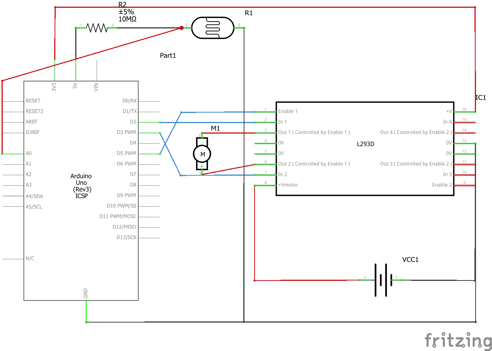
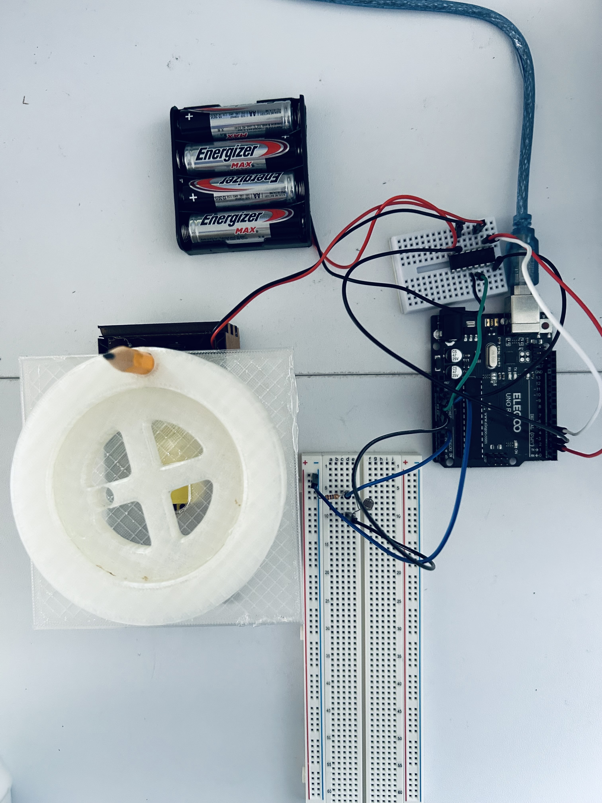
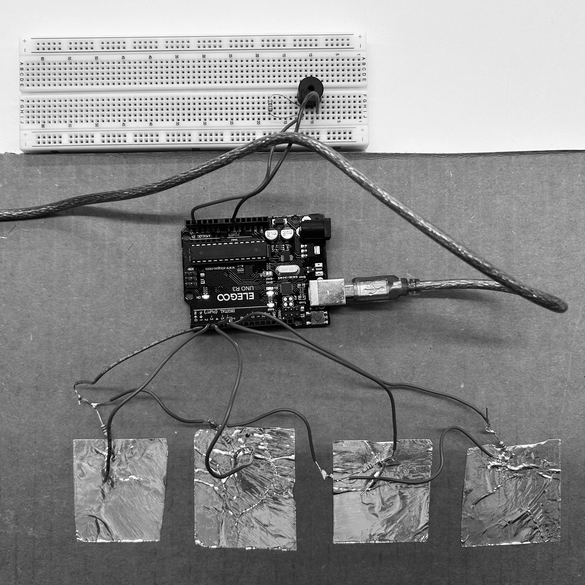
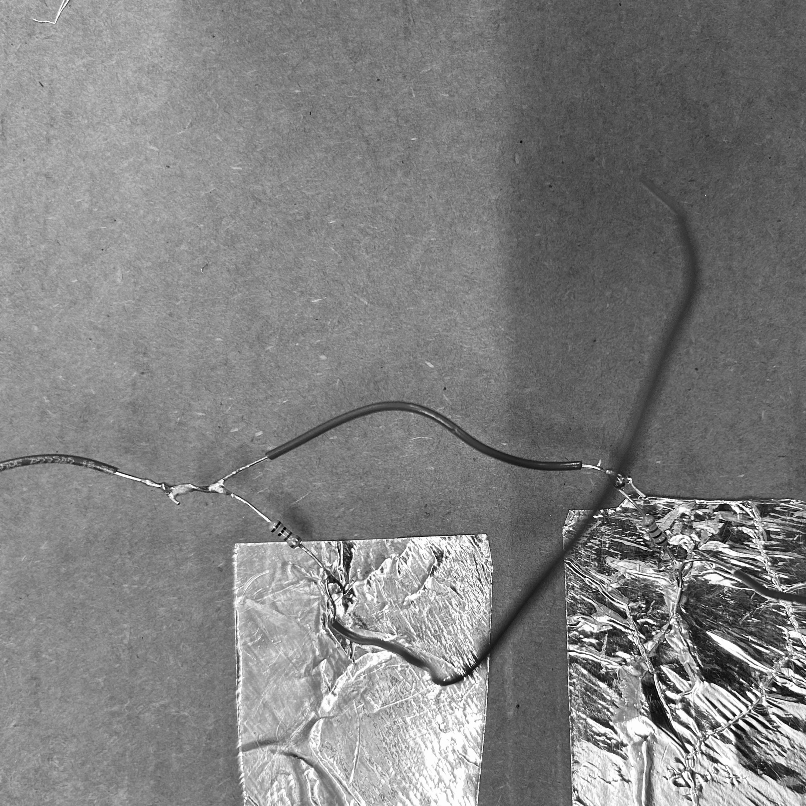

4: Microcontroller Programming
Using a photoresistor:
This exercise seeks to control motor speed based on sensor input. In this code, if the light level is dimmed, the motor turns on.
The circuit:

A simple schematic showing the following:
-
1 Arduino Uno Microcontroller
-
1 L293D Motor Driver
-
1 DC motor
-
1 Battery Holder (5V)
-
Wires
-
1 10 MOhlm resistor
-
1 Photoresistor
Light-Driven Motor


By controlling the light sensed by the photoresistor, I am able to control whether the DC motor turns on or not. By blocking the light I am able to initate the motor. To take this further I could control speed and direction of the motor based on different light exposures.
Making my own capacitive sensor:


I decided to make a keyboard. I downloaded two libraries to make this possible, the Capacitive Sensor library and Pitch library. Below is the code:
It works!